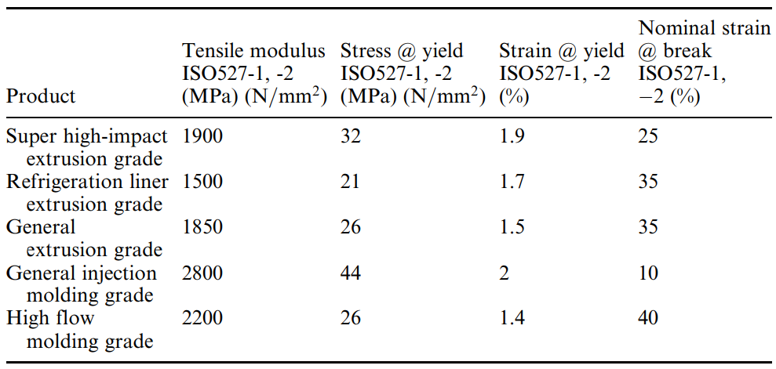
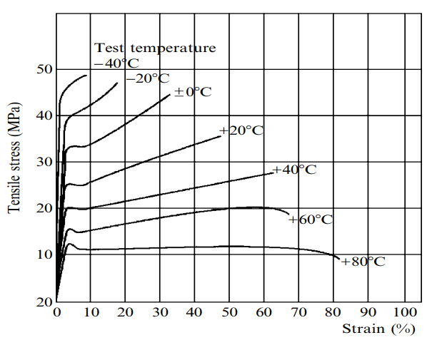
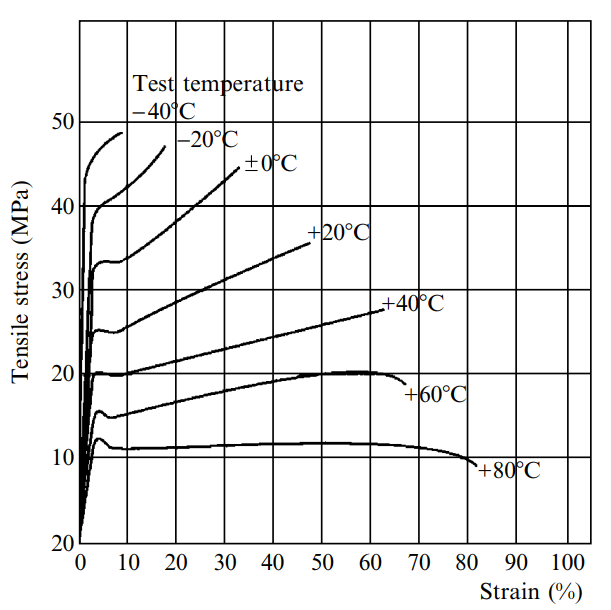
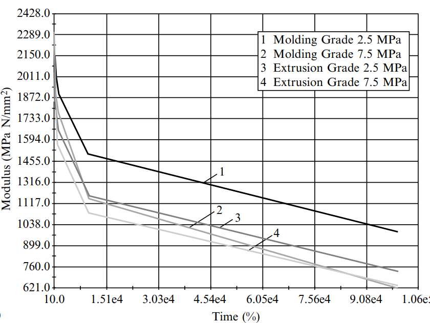
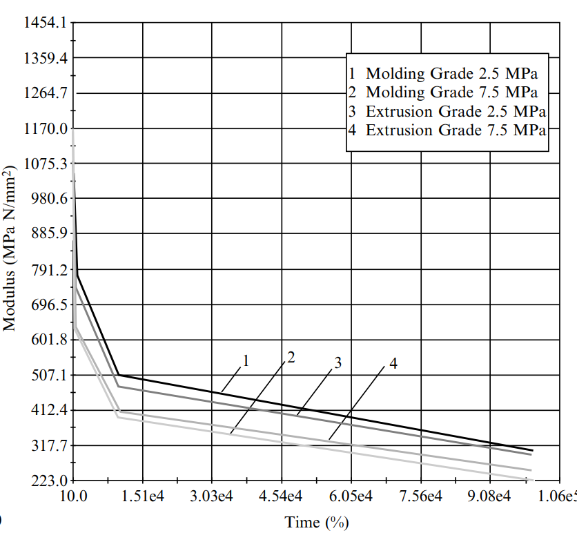
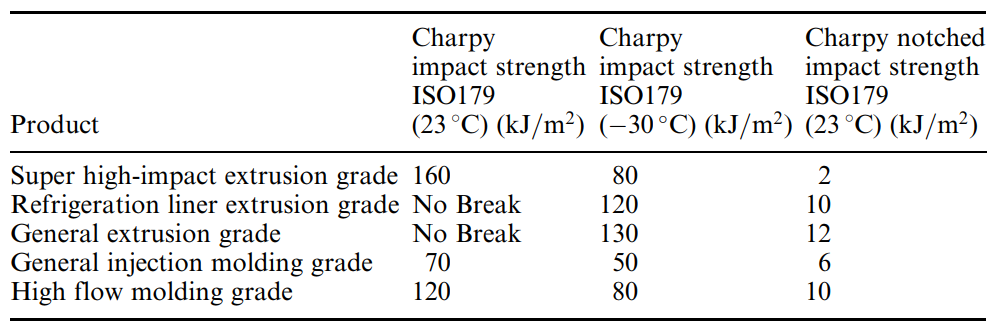
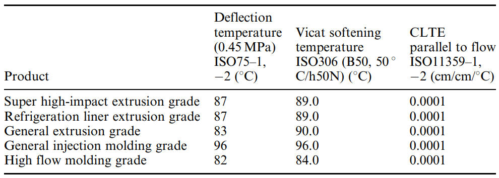
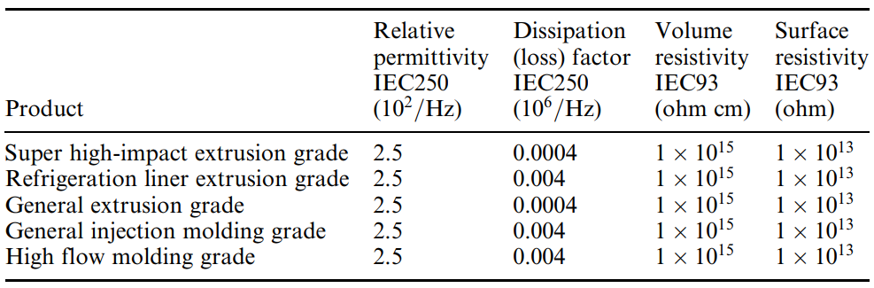
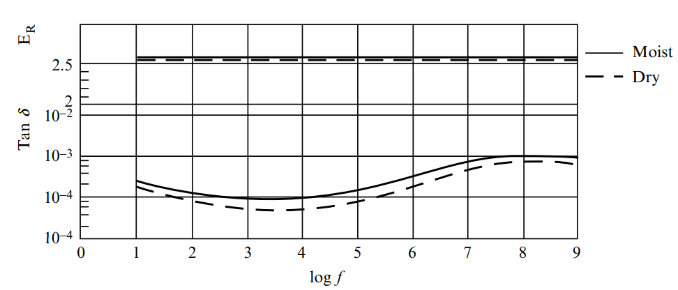

پلـــــــی استایــــــرن مقــــــــاوم در برابر ضـــــــربه
1. مقدمـــــــــــــــــــــه
2. خــــــــــــــــــــــواص
3. شیــــــــمی پـــــــــایه
4. ســــــــــــــــــــــاخت
5. تـــــــــــــــــــــولید
6. کــــــــــــــــــــاربرد
7. منـــــــــــــــــــــابع
مقدمه
پلیاستایرن (PS) در سال 1839 توسط ادوارد سیمون کشف شد که نشاندهنده یکی از قدیمیترین پلیمرهای ترموپلاستیک تجاری است؛ در حالی که برخی از خواص آن برای اولین بار توسط اشتاودینگر مورد تجزیه و تحلیل قرار گرفت. پس از پلیاولفینها و پلیوینیلکلراید، پلیاستایرن یکی از پرکاربردترین مواد ترموپلاستیک امروزه است. هموپلیمر پلیاستایرن یا پلیاستایرن عمومی که اغلب با عنوان GPPS شناخته میشود، یک محصول الکترونیکی بسیار متنوع است که کاربردهای بسیاری دارد. یک پلیمر نسبتاً ارزان، آمورف، آروماتیک، شفاف، شیشهای و درخشان با براقیت، پایداری ابعادی، سفتی، سختی و فرآیندپذیری خوب است. این پلیمر در حدود 75 درجه سانتیگراد نرم میشود و در حدود 100 درجه سانتیگراد مایع است و بنابراین به راحتی تشکیل میشود. با این حال، پلیاستایرن عمومی، که گاهی اوقات پلیاستایرن کریستالی نامیده میشود، در عین حال جزء مواد کاملا شکننده است و نقطه ذوب نسبتاً پایین، مقاومت شیمیایی ضعیف، خواص مانع ضعیف برای اکسیژن و بخار آب، مقاومت ضربه ضعیف، مقاومت خراش ضعیف، انعطافپذیری کم، تقویت الکترواستاتیک و غیره دارد که استفاده از آن را در محصولات مهندسی و کارایی بالا به طور قابل توجهی محدود میکند. مدتهاست که تشخیص داده شده است کوپلیمریزاسیون استایرن با سایر مونومرها (مانند بوتادین، آکریلونیتریل یا انیدرید مالئیک)، امکان کاربردهای آن را تا حد زیادی افزایش میدهد؛ بنابراین برای رفع معایب ذکر شده، پلیاستایرن اصلاح شد و امروزه کوپلیمرها و ترکیبات آن یکی از پرکاربردترین مواد پلیمری است. به عنوان مثال، سخت شدن لاستیک پلیاستایرن منجر به توسعه پلیاستایرن مقاوم در برابر ضربه (HIPS) شد که مقاومت در برابر ضربه و خواص مانع را بهبود بخشید، اما شفافیت را کاهش داد. این نوع پلیاستایرن توسط یک ستون فقرات پلیاستایرن با زنجیرههای پلیبوتادین پیوندی (PBD) تشکیل شده است. خواص جالب چنین موادی ناشی از اختلاطناپذیری PS و PBD است که باعث تشکیل دو فاز مجزا میشود. این سیستم دو فازی، متشکل از یک فاز لاستیکی و یک فاز پلیاستایرن پیوسته، یک سیستم پلیمری را فراهم میکند. این پلیمر که به یک پلیمر کالایی مهم در مقیاس جهانی تبدیل شده است، نیازهای هزاران کاربرد را برآورده میکند. با توجه به این که ویژگیهای عملکردی یک یا چند ویژگی را در بر میگیرد، این ویژگیها سبب شده تا این کاربردها بیشتر مورد توجه قرار گیرند. این محصول چندمنظوره را میتوان در بسیاری از ترکیبات یافت که طیف استثنایی از خواص و قابلیت فراورش را برای کاربردهای خودرو، لوازم خانگی، ابزار برقی، مبلمان، لوازم خانگی، مخابرات، الکترونیک، کامپیوتر، لوازم یکبار مصرف، پزشکی، بستهبندی و بازارهای تفریحی ارائه میدهد. برنامههای کاربردی چندگانه که توسط GPPS و HIPS پشتیبانی میشوند، مصرف جهانی این برنامهها را تا ۱۴ هزار تن متریک در آغاز قرن جاری تأمین کردهاند.خواص
هموپلیمر پلیاستایرن، که معمولاً بهعنوان پلیاستایرن همهمنظوره (GPPS) شناخته میشود، برای شفافیت عالی، سختی و پایداری ابعادی آن انتخاب شده است. در حالی که محصولات HIPS که به دلیل پایداری ابعادی و صلبیت عالی خود ارزشمند هستند، مقاومت ضربهای خوب و صلبیت بالایی را نیز فراهم میکنند که توسط GPPS نمایش داده نمیشود. معایب نسبی HIPS در مقایسه با مواد کریستالی، خواص دما بالای ضعیف، خواص سد اکسیژن ضعیف، پایداری نور فرابنفش نسبتاً پایین و مقاومت شیمیایی کمتر است.1.2. خواص عمومی
پلیاستایرن یک ماده ترموپلاستیک شکننده است. افزودن لاستیک، استحکام ضربهای آن را به میزان قابل توجهی افزایش می دهد. موفقیت تجاری HIPS تا حد زیادی به دلیل سهولت در توسعه سیستمهای پلیمری است که نیازهای کاربردی مانند چقرمگی، صلبیت، مقاومت در برابر تغییر شکل حرارتی و رفتار جریان را برآورده میکند. به طور معمول، افزایش یک ویژگی خاص نیاز به مبادله در سایر ویژگیها دارد. نکته کلیدی این است که یک ماده با تعادل عملکردی قابل قبول برای یک کاربرد خاص ایجاد شود. در فرآیندهای پلیمریزاسیون مدرن HIPS، این کار با انتخاب مواد خام، فرمولاسیون و شرایط عملیاتی انجام میشود. مواد مذاب اضافی این احتمالات را تشدید میکنند. ردههای تخصصی برای ارائه پیشرفت توسعه داده شدهاند، مانند ساخت سریع و بهبود مقاومت در برابر تنشهای محیطی. سیستمهای پلیمری تخصصی نیز به راحتی توسط اصلاح پس از راکتور HIPS با مواد افزودنی ویژهای که خواص اضافی، مانند مقاومت در برابر اشتعال، مقاومت در برابر فرسایش و مقاومت شیمیایی افزایشیافته را فراهم میکنند، به دست میآیند.2.2 خواص مکانیکی
همانطور که از یک سیستم مقاوم لاستیکی انتظار میرود، استحکام کششی HIPS با کاهش دما افزایش مییابد و با افزایش نرخ کرنش افزایش مییابد. شکل 1.12 یک رابطه تنش-کرنش معمولی را برای HIPS گرید اکستروژن نشان میدهد. HIPS یک افزایش اولیه با شیب کمتر و پس از رسیدن به نقطه تسلیم، تغییر شکلی مشخص تا زمان گسیختگی را در منحنی نشان میدهد. این رفتار مشخصه مواد سخت است. رفتار تنش-کرنش HIPS به دما و نرخ تغییر شکل بستگی دارد. همانطور که در شکل 2.12 مشاهده میشود، ازدیاد طول در هنگام شکست پلیاستایرن مقاوم در برابر ضربه، با کاهش دما و با افزایش نرخ تغییر شکل کاهش مییابد؛ در حالی که استحکام کششی رابطه عکس را نشان میدهد. تأثیر دما به طور قابل توجهی بیشتر از تأثیر نرخ تغییر شکل است.جدول 1.12- خواص کششی چند محصول HIPS
جدول 1.12- خواص کششی چند محصول HIPS
 HIPS مانند یک جامد ویسکوالاستیک رفتار میکند. هنگامی که در معرض یک تنش کششی ثابت قرار میگیرد، دچار خزش میشود. شکل 3.12 خواص خزش کششی نوعی محصول HIPS را نشان میدهد. خزش با افزایش وزن مولکولی کاهش مییابد و به طور کلی با افزایش مقدار لاستیک افزایش مییابد. رفتار خزشی HIPS به شدت به میانگین وزن مولکولی (MW) بستگی دارد. رزینهایی با وزن مولکولی بالاتر، تحت تنش تا نقطه پارگی، زاویه بسیار محکمتری میگیرند که منجر به افزایش مقدار شکست تحت فشار انتشار میشود. رفتار خزش تا شروع انتشار پارگی تحت تأثیر قرار نمیگیرد. یک خط قابل مشاهده از آسیب تحت تنش ظاهر میشود که نشاندهنده افزایش درهمتنیدگی پلیمر است (خطوط ترک). در آن نقطه، ماکرومولکولها نسبت کشش بالایی را تجربه میکنند. تحت تنش افزایش یافته، ستون فقرات کربن-کربن پلیمری میشکند و انتشار پارگی ادامه مییابد. در اصل، هر چه تنش بیشتر باشد، شکلگیری ترکها سریعتر رخ میدهد.شکل 2.12- منحنیهای تنش-کرنش HIPS در دماهای مختلف تست. نرخ کرنش ۲ میلیمتر بر دقیقه بر روی نمونههای تست قالبگیری تزریقی تعیین شد.
3.2. خواص ضربه ای
برخلاف نرخ تغییر شکل نسبتاً پایین در تست کشش و تست خزش، نرخ تغییر شکل بالا در تست ضربه منجر به بار دینامیکی بسیار بالاتری در نمونههای تست میشود. اصلاح لاستیکی با تثبیت ترک، چقرمگی قابل توجهی را ایجاد میکند. برای دستیابی به چقرمگی بالا، لازم است کسر حجمی زیادی از ترکها در سراسر سطح رشد کنند، بدون اینکه اجازه دهیم ترکها به شکاف تبدیل شوند. اکثر HIPSها در بارگذاری تکمحوری آزمون ضربه ایزود (Izod) تنها در صورتی شکست میخورند که نمونههای آزمون از قبل بریده شده باشند. در آزمون ضربه شکاف، جهت تنش در نمونههای قالبگیری تزریقی با جهت جهتگیری ترجیحی یکسان است. این امر چقرمگی ضربه اندازهگیری شده و میزان ضربه خروجی را افزایش میدهد و در نتیجه در درجه اول برای مقایسه چقرمگی محصولات مختلف به کار میرود. با این حال، در عمل، تنش چندمحوری به کار رفته در آزمون پرتاب دارت در حال سقوط بدون جهت قبلی، باید مورد انتظار باشد. این با آزمون گاردنر ASTM، که در آن یک دارت در حال سقوط به طور مرکزی به یک سطح صاف (مثلا یک دیسک دایرهای) برخورد می کند، پرداخته می شود. نتایج هر دو روش آزمون، از ملاحظات مهم طراحی پلیمر هستند.شکل 3.12- مدول خزش در دماهای به ترتیب 23 و 40 درجه سانتیگراد
 جدول 2.12- خواص ضربهای چند محصول HIPS
4.2. خواص حرارتی
مقاومت در برابر تغییر شکل حرارتی قطعات HIPS نهایی به شکل آنها، شرایط تولید، نوع منبع گرما و مدت زمان گرمایش و همچنین به گرید HIPS موردنظر بستگی دارد. قطعات تولید شده بدون اعمال بار خارجی و دارای تنشهای داخلی کم میتوانند برای مدت کوتاهی تا حدود 15 درجه سانتیگراد زیر دمای نرم شدن بدون تغییر شکل گرم شوند.جدول 3.12- خواص حرارتی گریدهای مختلف HIPS
5.2. خواص الکتریکی
HIPS یک پلیمر غیرقطبی و عایق الکتریکی بسیار خوب است. وابستگی خواص دیالکتریک به فرکانس و دما عملاً وجود ندارد؛ همانطور که در شکل 4.12 نشان داده شدهاست.جدول 4.12- خواص الکتریکی گریدهای مختلف HIPS
شکل 4.12- وابستگی خواص دیالکتریک به فرکانس و دما (خط توپر، مرطوب/خط چین، خشک)
6.2 خواص رئولوژیکی